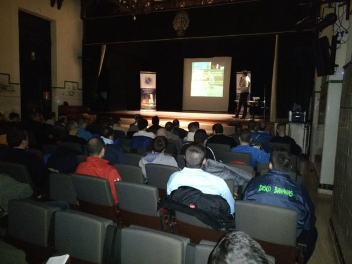

<div class="container " style="margin-top: 15px;">
  <div class="row">
    <div class="col-9">
      <div class="card">
        <div class="card-header">
        </div>
        <div class="card-body">
      <p style="margin-top: 10px">
El Colegio de Escribanos de la Provincia de Jujuy con la colaboración de su Comisión de Escribanos Noveles informa que se llevará a cabo el “Taller de Redacción y Defensa de Ponencias”, en el marco de las próximas Jornadas Notariales Cordobesas y el Encuentro Nacional del Notariado Novel. <br>
Dicho taller constará de dos módulos, que se desarrollarán en la sede de Jujuy Capital del Colegio de Escribanos (subsuelo), el día 21 de Junio. El primer módulo se realizará de 15 a 16.30; en él se abordarán cuestiones sobre redacción y preparación de ponencias, a cargo del Escribano Emery Omar Muñoz. <br>
El segundo módulo se realizará de 17 a 19. Tema: Oratoria y defensa de ponencias. Será dictado por la Licenciada Rosana Fernández.
<br>
Ambos módulos serán transmitidos a las delegaciones por videoconferencia.
<br>
A fin de lograr un mayor éxito en el taller, se sugiere tener elegida una temática (aunque más no sea de manera estimativa) para las Jornadas Notariales Cordobesas y/o para el Encuentro Nacional del Notariado Novel.
</p>
</div>
</div>
</div>
<div class="col-md-3 hidden-sm">
    <app-aside></app-aside>
  </div>
</div>
</div>
